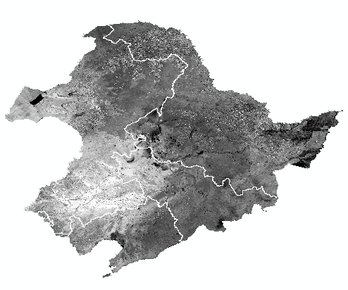
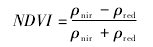
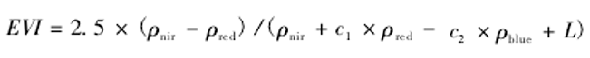
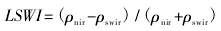
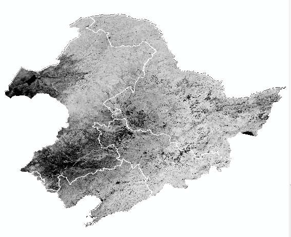
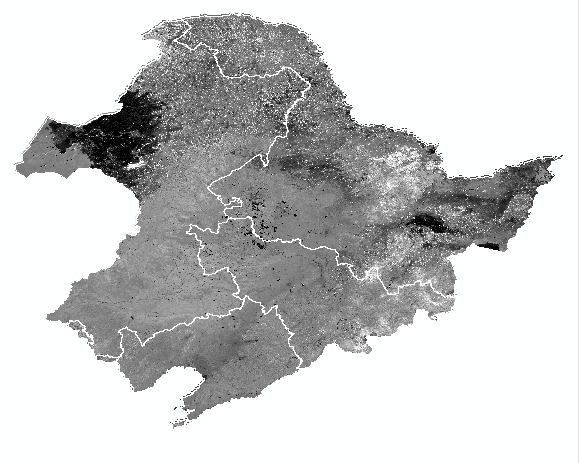
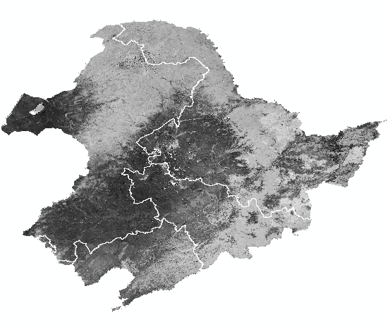
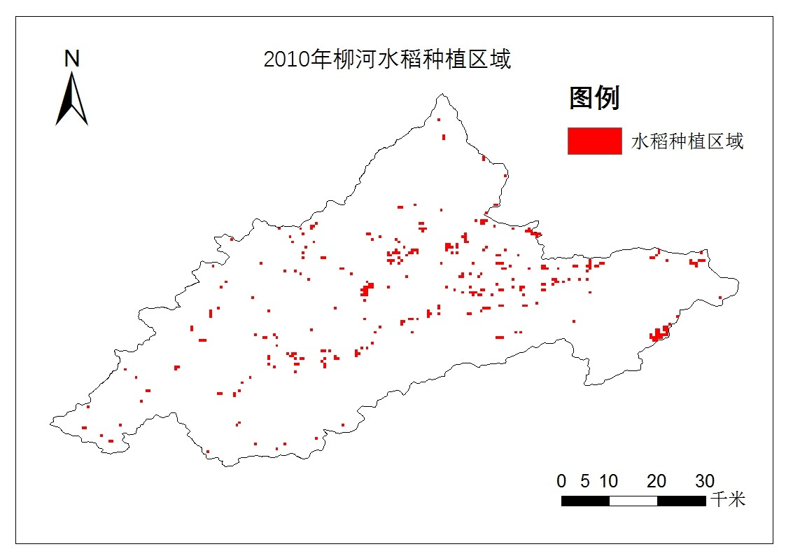

东北地区水稻种植面积提取
1.研究目的
建立基于野外观测和遥感数据的水稻大面积发育期识别模型。
2.研究思路
利用水稻在不同生长发育阶段特殊的生理特性在MODIS时间序列数据中所表现出的光谱特征，比较其光谱特征与其他地物类型之间的差异，构建物候参数与农作物种植面积之间的定量函数关系，优化提取模型，获取农作物提取最佳参数，进行大尺度农作物空间信息提取和制图。根据函数完成对水稻的识别，从而实现对水稻种植面积和空间分布范围的提取。
3.研究方法与结果
3.1数据预处理
首先将下载经过辐射值校正的500m分辨率的MYD09A1 16天合成产品。由于MODIS数据为HDF格式，投影方式为sin投影，为后期应用必须进行数据的投影变化、格式转换、裁剪和镶嵌等预处理。数据处理时，使用MRT批处理进行镶嵌，同时将数据格式转为tiff格式，投影方式转为UTM_Zone_51N投影。(左图)
3.2指数选取与计算
通过阅读大量文献，并反复实践后，本项目主要选取了归一化植被指数(NDVI)、增强型植被指数(EVI)、陆表水分指数(LSWI)三种植被指数。并使用ENVI与Arcgis计算出这三种指数。
归一化植被指数(NDVI),是最常用的植被指数，可较好地反映植被绿度变化，能消除影像内部和外部的噪音，计算公式为：
式中:ρnir为近红外波段反射率; ρred为红光波段反射率。
增强型植被指数(EVI) ，蓝光波段修正大气对红光波段的影响,可以提高对高生物量区的敏感度,通过消弱叶冠背景信号和降低大气影响来改善对植被的监测,与 NDVI互为补充，利用计算公式为：
式中：ρnir为近红外波段反射率; ρred为红光波段反射率; ρblue为蓝光波段反射率; L=1，为土壤调节参数;参数 C1和 C2分别为6 和7.5。
陆表水分指数( LSWI) 是与植被水分含量有关的植被指数，对处于泡田期的水稻监测有较好效果，计算公式:
式中: ρnir为近红外波段反射率; ρswir为中短波红外波段反射率。(下图从左到右为NDVI,EVI，LSWI)
  3.3建立基于水稻典型发育期光谱特征的水稻种植面积和水稻空间分布范围提取模型
根据3月中旬到9月中旬的NDVI指数图，其中，至少有8个16天合成的时相NDVI≥0.7，这些像元认为是林地并从影像中剔除，这一部分使用脚本文件，用以提高整体的运行效率。
根据东北地区DEM图，坡度大于15°的地区被认为不可能有水稻生长，从影像中去除。
根据Xiao等的研究，在移栽期若某个像素符合EVI≤LSWI+0.05那么该像素可能为水稻田，而该方法仍存在缺陷,会把湿地或者由于灌溉或降雨而导致的土壤含水量的其他作物也同时包含进来。而通常情况下，在移栽期稻田反射光谱是水，土壤、秧苗以及稻田的背景的混合光谱。在该时期，稻田高土壤含水量和低植被覆盖度可用LSWI与EVI检测出来，若在灌水移栽期EVI值较高，则说明该像素代表地物为其他植被，为非水稻区域。因此，本项目判断若移栽期像素符合LSWI>0.12,EVI<0.26，且(LSWI+0.05)>EVI，则这些像素可能为水稻田；由实验表明，对水稻像元来说，在移栽期之后第3到第5个16天合成的时期(处于水稻生长最旺盛的阶段)，如果图像未受云影响，则这3个时期平均EVI值将大于0.35，所以永久水体和其他非水稻区域可通过这个条件去除。最终输出的结果就是本项目提取的水稻空间分布范围。(下图)
